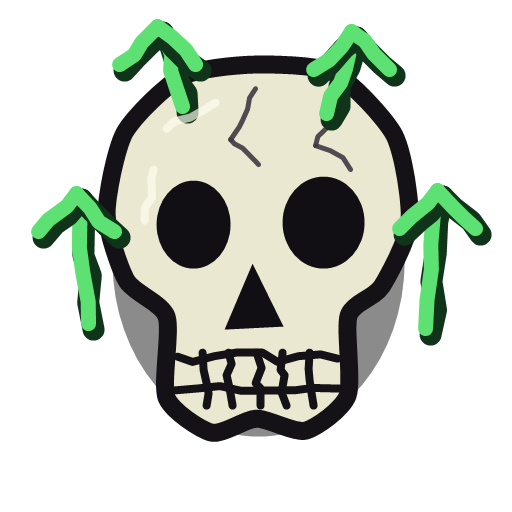
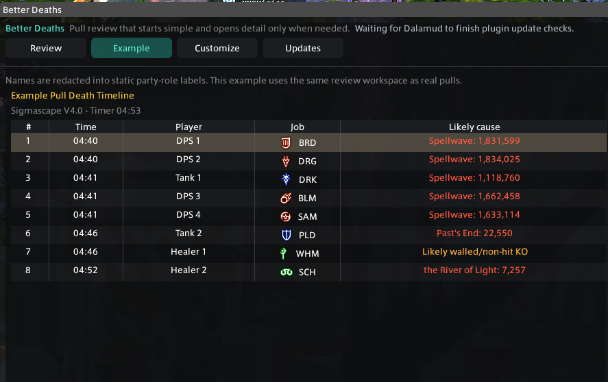
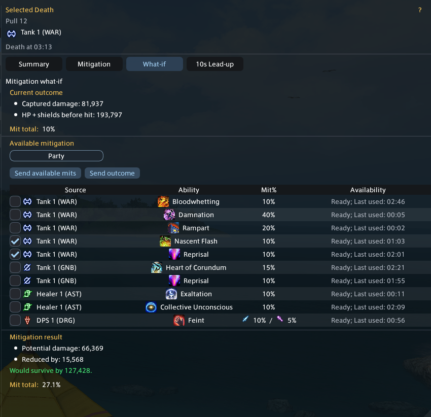
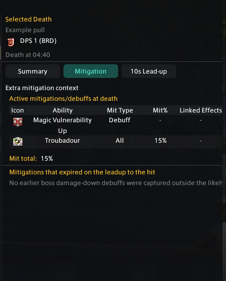
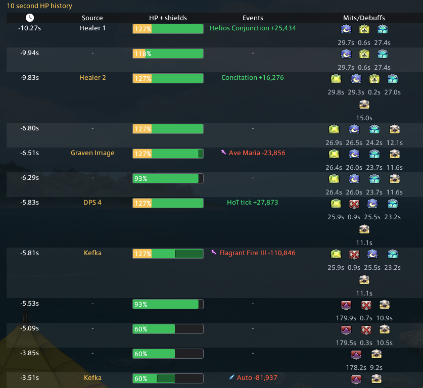
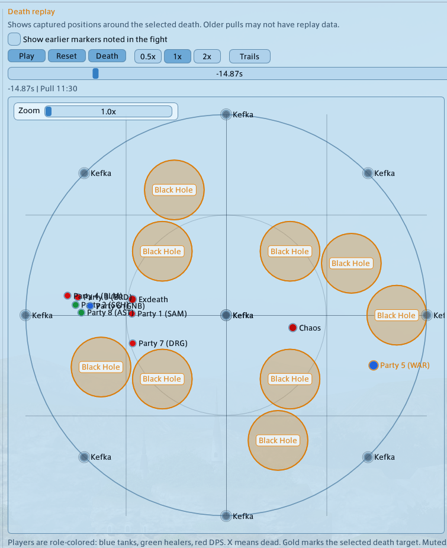
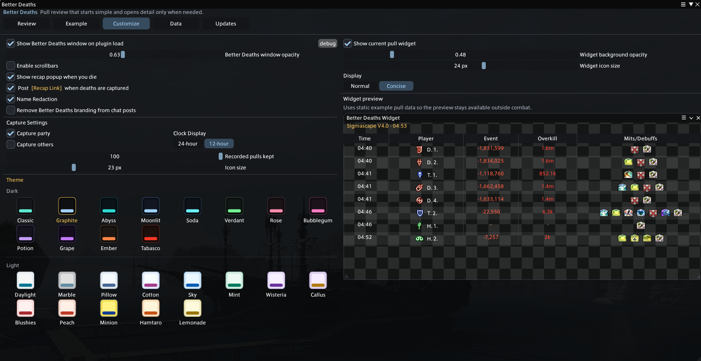

Fatal Event Review
See the hit or event that caused the death with source, amount, damage type, overkill, and HP plus shields before impact.

FFXIV Dalamud plugin
A raid-focused death recap tool for reviewing fatal events, HP plus shields, mitigation coverage, enemy HP at death, What-if mitigation, the 10-second lead-up before each KO, and Death Replay in beta.
Better Deaths keeps deaths grouped by pull and puts the useful review data in one place, so a wipe can be checked without digging through scattered combat text.
See the hit or event that caused the death with source, amount, damage type, overkill, and HP plus shields before impact.
Review player mitigations, shields, debuffs, target mitigation, expired context, and calculated mitigation totals.
Inspect recent HP samples, healing, damage, sources, status timers, and captured events leading into the death.
Pick available mitigation and see how selected tools would have changed the damage outcome.
Review captured positions, markers, mechanics, and movement around the selected death while replay work continues.
Keep a compact current-pull view open during progression with normal and concise display modes.
Use theme options, name redaction, local pull history, and optional chat recap links for other Better Deaths users.
Better Deaths does not upload your data. It has no upload functions, telemetry, analytics, webhook, feedback endpoint, or hidden network reporting built into the plugin.
Recorded pulls stay on your machine so they remain available after wipes, resets, reloads, or plugin updates.
Saved pull files can include player names, jobs, duty names, death timing, HP, shields, damage events, actions, statuses, and mitigation context.
Name Redaction helps with screenshots and shared display, but local saved pull files may still contain the original captured names.






Add the custom plugin repository in Dalamud, then install Better Deaths from the plugin installer.
https://puni.sh/api/repository/nainai
Open Repo JSON
Better Deaths only functions in duties. It does not capture overworld combat or PvP recaps.
/betterdeaths /bd /betterdeathswidget /bdwidget
Use these commands to open the main death recap window or toggle the current pull widget.